Жёсткое ДТП на трассе Хабаровск — Владивосток: водитель врезался в леер
На трассе Хабаровск — Владивосток произошло жёсткое дорожно-транспортное происшествие, которое могло закончиться трагически. Водитель легкового автомобиля,...
На трассе Хабаровск — Владивосток произошло жёсткое дорожно-транспортное происшествие, которое могло закончиться трагически. Водитель легкового автомобиля,...
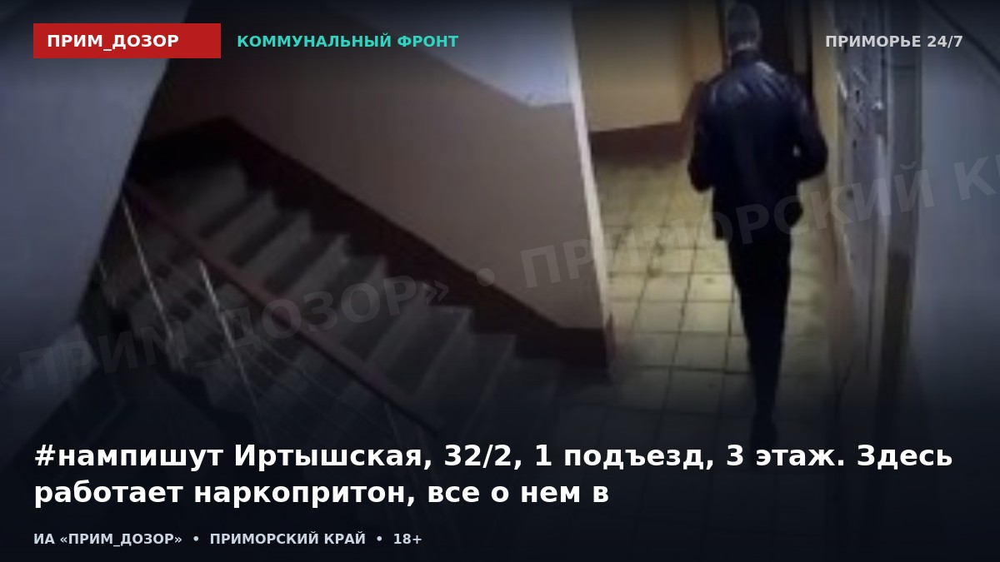
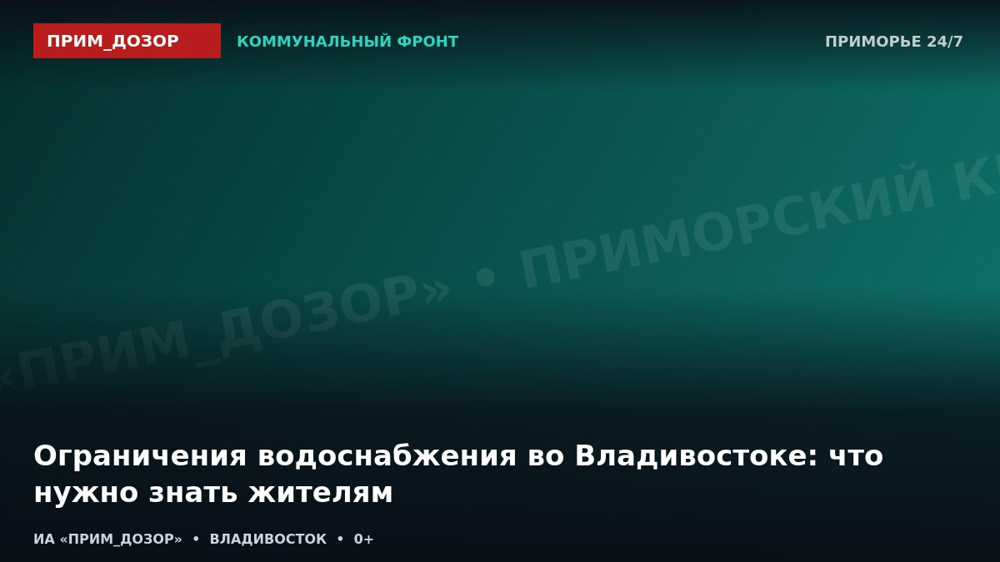
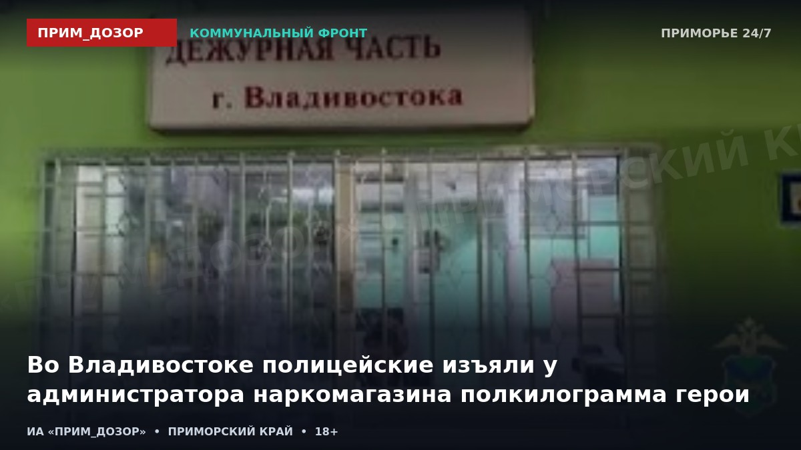
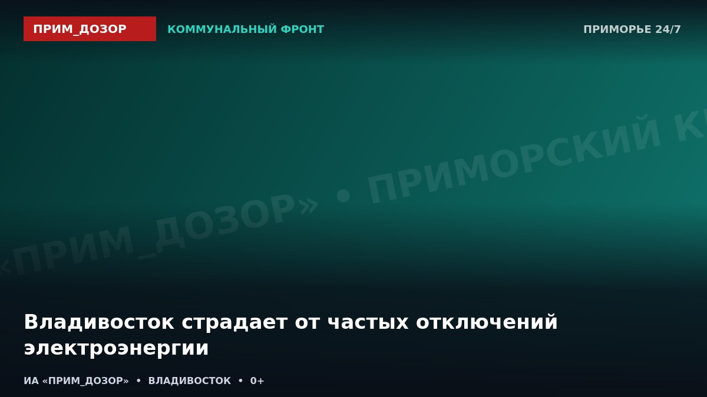
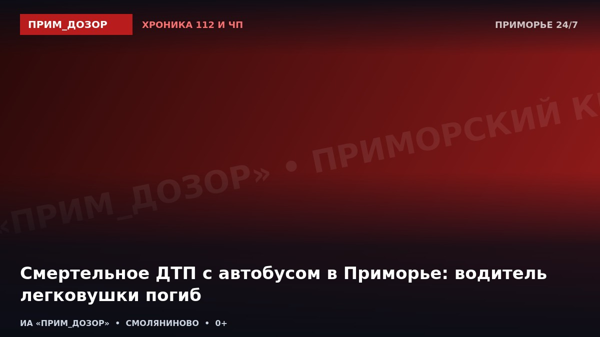
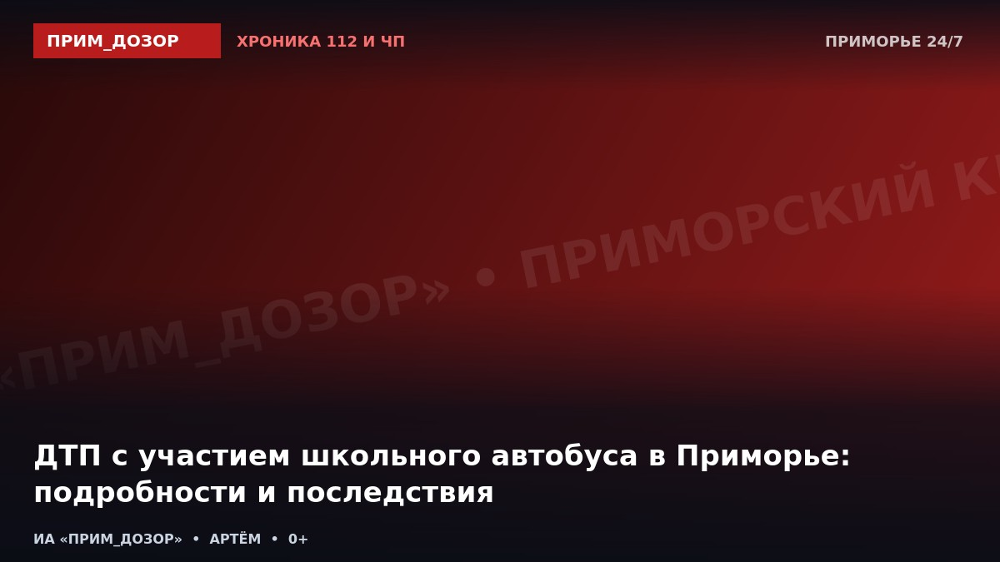
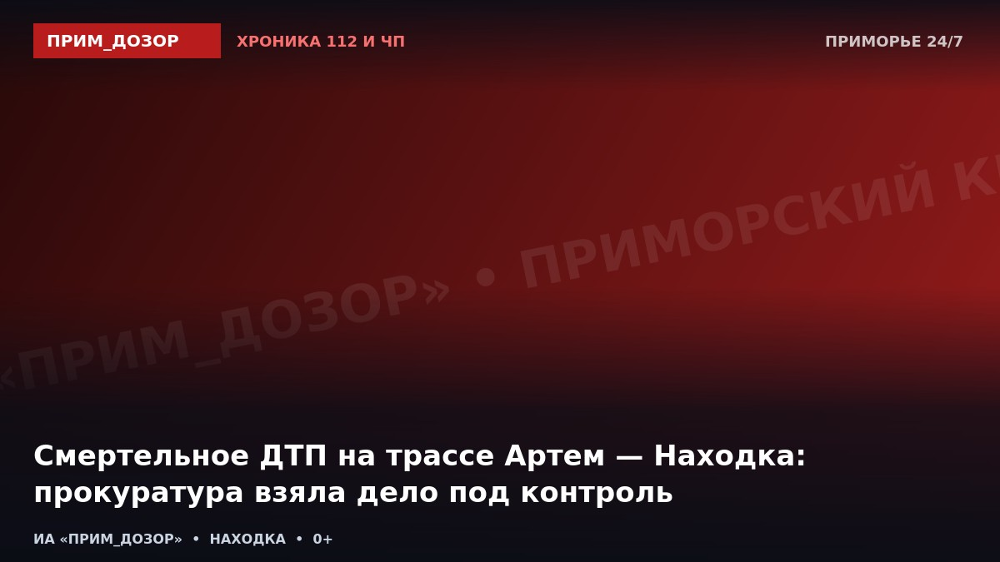
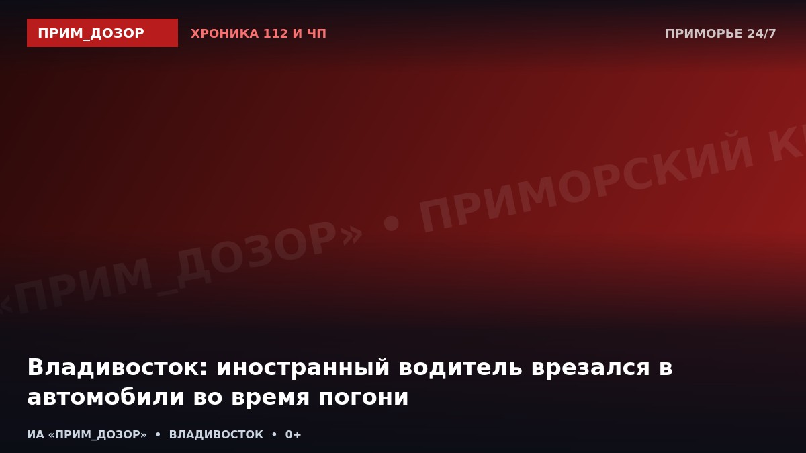


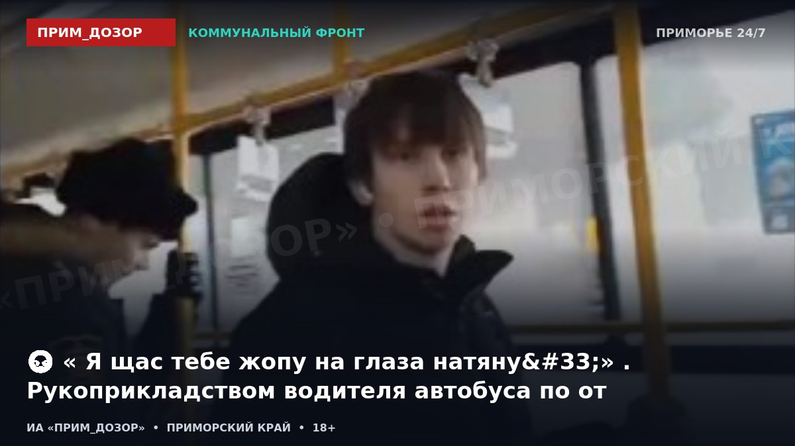
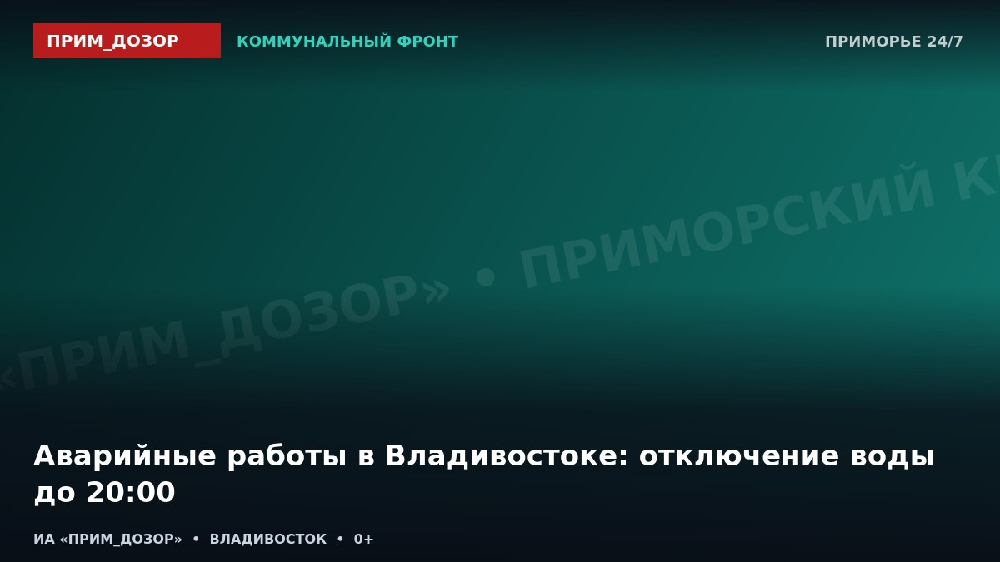


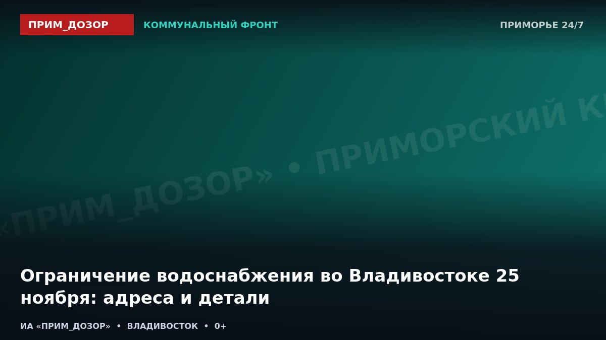